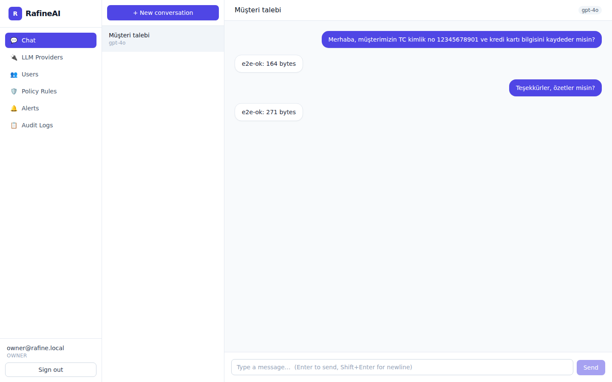

<meta charset="utf-8">
<meta name="viewport" content="width=device-width, initial-scale=1">
<title>RafineAI — Self-Hosted AI Governance &amp; API Gateway</title>
<meta name="description" content="RafineAI is an open-source AI Governance &amp; API Gateway you run on your own infrastructure. Authenticate traffic, enforce policy, audit every LLM interaction, and ship a built-in chat panel — all from one docker compose up.">
<link rel="icon" href="assets/logo.svg" type="image/svg+xml">
<link rel="stylesheet" href="styles.css">

<header class="nav">
  <div class="wrap nav__inner">
    <a class="brand" href="#top">
      
      <span>RafineAI</span>
    </a>
    <nav class="nav__links">
      <a href="#features">Features</a>
      <a href="#quick-start">Quick Start</a>
      <a href="#panel-guide">Admin Guide</a>
      <a href="https://github.com/RafineAI/rafineai-self-hosted">GitHub</a>
    </nav>
  </div>
</header>

<main id="top">
  <section class="hero">
    <div class="wrap hero__inner">
      <div class="hero__copy">
        <p class="eyebrow">Open source · Self-hosted · MIT licensed</p>
        <h1>AI governance and an LLM gateway you run yourself</h1>
        <p class="lede">
          RafineAI sits between your apps and LLM providers (OpenAI, Anthropic, Gemini…).
          It authenticates traffic, applies security policy, records a full audit trail of
          every interaction, and ships a built-in chat panel — all from a single
          <code>docker compose up</code>.
        </p>
        <div class="cta-row">
          <a class="btn btn--primary" href="#quick-start">Get started</a>
          <a class="btn btn--ghost" href="https://github.com/RafineAI/rafineai-self-hosted">View on GitHub</a>
        </div>
        <ul class="hero__facts">
          <li>Go gateway hot path — HMAC keys, zero DB round-trip</li>
          <li>Async, batched audit logging that never blocks requests</li>
          <li>Own your data — nothing leaves your infrastructure</li>
        </ul>
      </div>
      <div class="hero__media">
        
      </div>
    </div>
  </section>

  <section id="features" class="features">
    <div class="wrap">
      <h2>Everything a self-hosted LLM gateway needs</h2>
      <p class="section-lede">Core proxying, policy, and audit — plus an enterprise feature set for teams that need more.</p>
      <div class="grid">
        <article class="card">
          <div class="card__icon">🔐</div>
          <h3>Zero-network auth</h3>
          <p>Gateway API keys are HMAC-SHA256 signed and verified with CPU math only — no database round-trip on the hot path.</p>
        </article>
        <article class="card">
          <div class="card__icon">🛡️</div>
          <h3>Policy &amp; response masking</h3>
          <p>Enforce security policy on every request, and mask sensitive data (TCKN, IBAN, cards, API keys) in the model's reply too — even mid-stream.</p>
        </article>
        <article class="card">
          <div class="card__icon">📜</div>
          <h3>Full audit trail</h3>
          <p>Every interaction is logged asynchronously to a buffered, batch-written channel, so audit logging never blocks a request.</p>
        </article>
        <article class="card">
          <div class="card__icon">🧑‍🤝‍🧑</div>
          <h3>Teams &amp; limits</h3>
          <p>Group users into teams with RPM and daily token limits, and per-provider access — enforced with the most restrictive limit in effect.</p>
        </article>
        <article class="card">
          <div class="card__icon">📚</div>
          <h3>RAG / NotebookLM</h3>
          <p>Index documents with pgvector embeddings and ask grounded questions; answers cite the source documents they came from.</p>
        </article>
        <article class="card">
          <div class="card__icon">📊</div>
          <h3>Usage dashboard</h3>
          <p>Requests, tokens, estimated cost, p95 latency, and error rate — with daily charts and a Prometheus <code>/metrics</code> endpoint.</p>
        </article>
      </div>
    </div>
  </section>

  <section id="quick-start" class="quick-start">
    <div class="wrap">
      <h2>Quick start</h2>
      <p class="section-lede">One command gets you a running stack with generated secrets and a seeded owner account.</p>

      <div class="steps">
        <div class="step">
          <h3><span class="step__num">1</span>Clone &amp; install</h3>
          <pre><code>git clone https://github.com/RafineAI/rafineai-self-hosted.git
cd rafineai-self-hosted
./install.sh</code></pre>
          <p><code>install.sh</code> checks dependencies, generates strong secrets, writes <code>.env</code>, starts the stack, waits for health, seeds the default owner account, and prints your login credentials.</p>
        </div>
        <div class="step">
          <h3><span class="step__num">2</span>Or run it manually</h3>
          <pre><code>cp .env.example .env      # edit secrets + provider keys
docker compose up -d      # pulls pre-built images</code></pre>
          <p>The panel is then available at <code>http://localhost</code>.</p>
        </div>
        <div class="step">
          <h3><span class="step__num">3</span>Build from source (dev)</h3>
          <pre><code>cp .env.example .env
docker compose -f docker-compose.dev.yml up --build</code></pre>
          <p>Prerequisites: Docker &amp; Docker Compose v2, and a machine with ≥ 2 GB RAM.</p>
        </div>
      </div>
    </div>
  </section>

  <section id="panel-guide" class="panel-guide">
    <div class="wrap">
      <h2>Panel &amp; admin guide</h2>
      <p class="section-lede">
        After install you get an <strong>owner</strong> account
        (<code>owner@rafine.local</code> by default). Here's what to do next.
      </p>
      <ol class="guide-list">
        <li><strong>Create accounts.</strong> Add <strong>admin</strong> and <strong>user</strong> accounts from User Management.</li>
        <li><strong>Configure LLM providers.</strong> In LLM Management, add a shared API key or set up per-user OAuth2.</li>
        <li><strong>Invite users.</strong> Hand out the panel URL — users log in and start chatting immediately.</li>
      </ol>

      <div class="table-wrap">
        <table>
          <thead>
            <tr><th>Role</th><th>Capabilities</th></tr>
          </thead>
          <tbody>
            <tr><td><code>owner</code></td><td>Everything. Single account, cannot be deleted.</td></tr>
            <tr><td><code>admin</code></td><td>Manage users, providers, and policies; view all audit logs.</td></tr>
            <tr><td><code>user</code></td><td>Chat; view only their own conversations.</td></tr>
          </tbody>
        </table>
      </div>

      <p class="guide-note">
        See <a href="https://github.com/RafineAI/rafineai-self-hosted/blob/main/docs/FLOW.md">docs/FLOW.md</a>
        for a full screenshot walkthrough — login, chat, providers, users, policy rules, alerts, and audit logs —
        and <a href="https://github.com/RafineAI/rafineai-self-hosted/blob/main/docs/DEPLOYMENT.md">docs/DEPLOYMENT.md</a>
        for building and pushing your own versioned images (GHCR, GCP Artifact Registry, or a private Docker Hub repo).
      </p>
    </div>
  </section>
</main>

<footer class="footer">
  <div class="wrap footer__inner">
    <div class="brand brand--footer">
      
      <span>RafineAI</span>
    </div>
    <nav class="footer__links">
      <a href="https://github.com/RafineAI/rafineai-self-hosted">GitHub</a>
      <a href="https://github.com/RafineAI/rafineai-self-hosted/blob/main/README.md">Documentation</a>
      <a href="https://github.com/RafineAI/rafineai-self-hosted/blob/main/docs/DEPLOYMENT.md">Deployment guide</a>
      <a href="https://github.com/RafineAI/rafineai-self-hosted/blob/main/LICENSE">MIT License</a>
    </nav>
  </div>
</footer>
